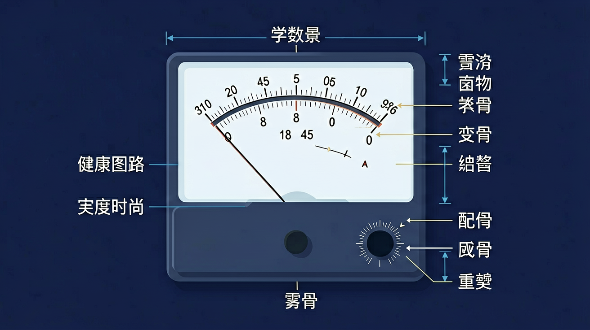
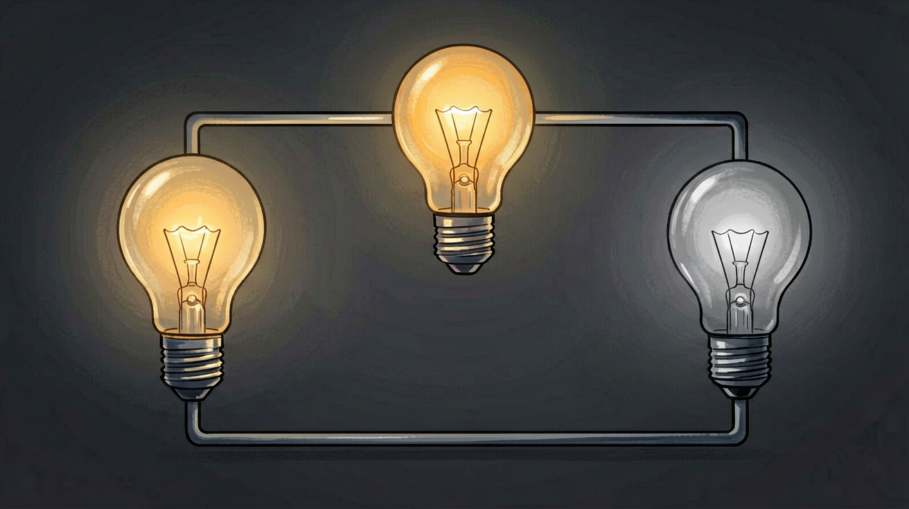
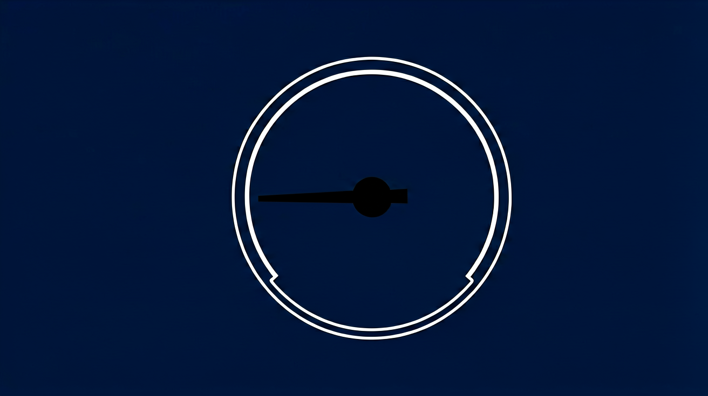

测电流必须把电流表串联进被测支路，并选择合适量程，否则易烧表或读数不准。
知道电流单位是安培。
把电流表当电压表并联；量程选错。
接法→量程→读数→安全。
电流表正确接法
电流表必须串联。
先估计，先试大量程，再改小。
看清量程与分度值，估读。

电流用电流表测量，使用规则是：电流表必须串联在被测电路中，电流从“+”接线柱流入、从“−”接线柱流出，被测电流不得超过量程，绝不允许把电流表直接接到电源两极上。常用量程为 0～0.6 A（分度值 0.02 A）和 0～3 A（分度值 0.1 A）。
不能确定电流大小时先用大量程试触。读数时先确认所选量程，再按对应分度值读数：同一指针位置，0～0.6 A 量程的读数是 0～3 A 量程读数的五分之一。
常见误区：常见误区是按大量程刻度直接读数却使用了小量程，导致读数扩大 5 倍。
使用电流表时，下列做法正确的是？
选用 0～0.6 A 量程，指针位置对应 0～3 A 刻度的 1.5，则实际电流为？

💡 把电流表串进支路，比较不同位置的读数。
外链：https://phet.colorado.edu/sims/html/circuit-construction-kit-dc/latest/circuit-construction-kit-dc_zh_CN.html
电流单位
电流表能否直接接电源两极
估计 0.25A，更合理的量程
读数时要注意
测灯泡电流，电流表应
用三句话总结本课最关键的一条规律，并举一个生活例子。
勾选你已掌握的条目。
❓ 为什么电流表必须串联在电路里？并联会怎样？
❓ 量程选大了指针偏转小，选小了会烧坏，到底该怎么选？
❓ 读数时到底看哪一排刻度线？0.6A和3A量程的刻度不一样吗？
学完这一课，这些问题你都能自信地回答。
🎯 能说出电流表串联使用的原因及并联的危险性
🎯 能根据估计值正确选择0.6A或3A量程并解释选择依据
🎯 能分析不同量程下刻度线的对应关系并准确读数
✅ 反接时指针会反向打表，应立即断开防止损坏
💡 未理解表头机械结构特性
✅ 小电流应优先用0.6A量程（分度值更小）
💡 混淆量程范围与测量精度概念
口诀：串联要记牢，量程看大小，读数对量程，安全第一条
类比：像查水管流量，必须让全部水流经过水表才能准确计量
如图电路，当开关闭合时发现电流表指针反偏，说明（）[升学题]
用3A量程测得指针指在第15小格，实际电流是（）[计算题]
检修汽车电路时，技师将电流表接在保险丝位置测量，这运用了（）[迁移题]
点击节点跳转到对应章节；可切换布局。
And：学生知道串联和并联的基本概念
But：不清楚电流表接入电路时为何必须串联
Therefore：理解电流表串联才能准确测量电流
电流表相当于一根导线，必须串联在电路中才能测出真实电流。比如测小灯泡电流时，如果把电流表并联在灯泡两端，相当于给电流‘开了条近路’，大部分电流会绕过灯泡直接通过电流表，导致测量值远大于实际值（可能从0.3A变成2A以上），还会烧坏电表。
🌍 就像测水管水流必须把流量计装进水管里，如果挂在管外就测不准了。
测电风扇电流时，电流表应该：
And：学生知道电流表有不同量程
But：不会根据预估电流选择合适量程
Therefore：掌握‘先估后选’的实用技能
选量程要‘宁大勿小’：先用最大量程试触，再换到接近实际值的档位。比如测手电筒电路时，如果预估电流约0.3A：①先用3A量程试测；②若显示0.28A，就换到0.6A档，这样读数更精确（0.6A档每小格代表0.02A，而3A档每小格是0.1A）。绝对禁止直接用最小量程！
🌍 就像用体重秤，先选0-150kg档站上去，发现只有45kg再换到0-100kg档会更准。
预估电路电流1.2A，应优先选哪个量程试测？
And：学生会读电流表示数
But：忽略电路参数改变时的电流变化
Therefore：建立电流与电路参数的关联
电流会随电路变化实时改变！比如用两节电池串联（3V）驱动灯泡时：①初始电流可能是0.3A；②当电池电量下降至2V时，电流可能降到0.2A；③如果再并联一个灯泡，电流会增大到0.4A（总电流）。要边调节边观察，不能只记初始值。
🌍 就像开车时油表指针会随着油门深浅实时变化，不能只看起步时的数值。
调高电源电压时，电流表示数会：